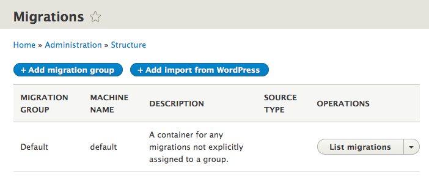
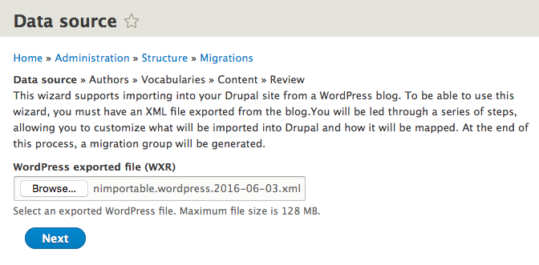
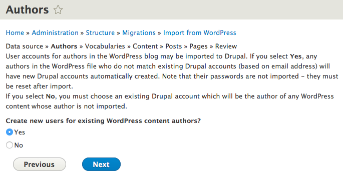
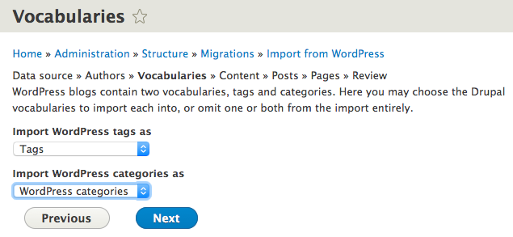
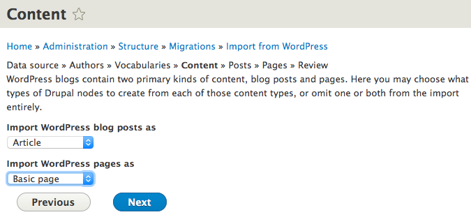
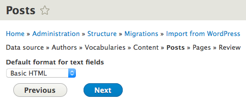
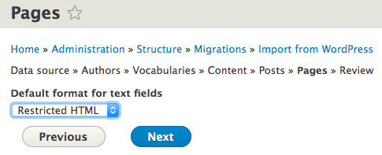
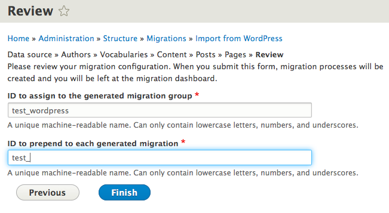
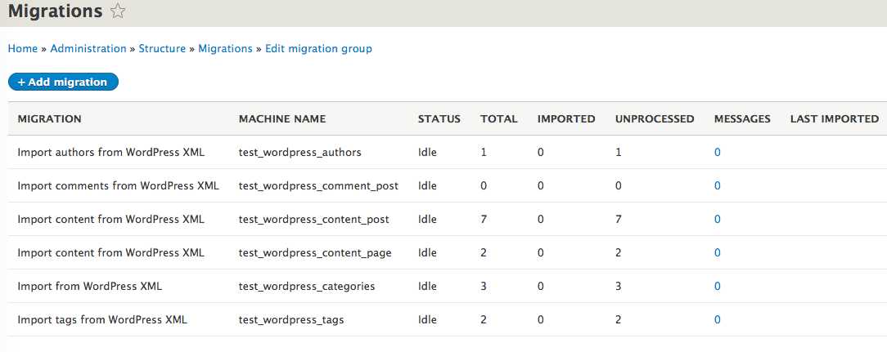

wordpress_migrate now has a Drupal 8 release
So, last week the next arena for me to work on came up as XML/JSON source plugins (see my companion piece for more on that). My intention had been to hold off tackling wordpress_migrate until "nailing down" the XML parser plugin it depends on, but I decided that at least trying to prototype a WordPress migration would be a good test of the XML plugin. The initial attempt was promising enough that I kept going... and going - we've now got a (very) basic D8 dev release!
The UI
The user interface works generally as it did under Drupal 7 - upload the XML file on the first page of a wizard, configure taxonomies, then content, then review. It's important to note that this UI is for configuring the WordPress migration process - it creates the migrations, which you can then run using migrate_tools.
To begin, visit the migration dashboard at /admin/structure/migrate:
Clicking "Add import from WordPress" starts the wizard, where you can upload your XML file:
Clicking Next provides options for handling authors:
Next you can select which Drupal vocabularies (if any) to use for your WordPress tags and categories:
Then, choose the Drupal content types to use for WordPress posts and pages:
You may omit either one (actually, you could omit both if all you wanted to import were authors, tags and/or vocabularies!). Following that, for each content type you selected you can choose the Drupal text format to use for the body content:
In the review step, you can choose the machine name of the migration group containing your WordPress migrations, and also a prefix added to each generated migration's original machine name (if you were to import multiple WordPress blogs into your site, choosing distinct values here will keep them straight).
When you click Finish, you are brought to the migration dashboard for your new group:
Soon, you should be able to run your migration from this dashboard - for now, you'll need to use drush (which, really, you should use anyway for running migrations).
The drush command
Speaking of drush, you can configure your migrations through drush instead of stepping through the UI. Most of these options should be self-evident - do drush help wordpress-migrate-configure for more information.
drush wordpress-migrate-generate private://wordpress/nimportable.wordpress.2016-06-02.xml --group-id=test --prefix=my_ --tag-vocabulary=tags --category-vocabulary=wordpress_categories --page-type=page --page-text-format=restricted_html --post-type=article --post-text-format=full_html
Using drush for configuration has some advantages:
- If you're testing the import process, particularly tweaking the settings, it's much quicker to reissue the command line (possibly with minor edits) than to step through the UI.
- Scriptability!
- If your WordPress site is large, uploading the XML through the UI may run into file upload limits or timeout issues - alternatively, you can copy the XML file directly to your server and configure the migration to point to where you put it.
Ctools Wizard
This was my first time using the Ctools wizard API, and it's really easy to create step-by-step UIs - even dynamic ones (where not all the steps are determined up-front). Basically:
- Set up two routes in example.routing.yml, one for the landing page of your wizard, and one to reflect the specific steps (containing a {step} token).
- Create a class extending FormWizardBase.
- Implement getRouteName(), returning the step route from above.
- The key - implement getOperations() to tell the wizard what your steps are (and their form classes):
public function getOperations($cached_values) {
$steps = [
'source_select' => [
'form' => 'Drupal\wordpress_migrate_ui\Form\SourceSelectForm',
'title' => $this->t('Data source'),
],
'authors' => [
'form' => 'Drupal\wordpress_migrate_ui\Form\AuthorForm',
'title' => $this->t('Authors'),
],
'vocabulary_select' => [
'form' => 'Drupal\wordpress_migrate_ui\Form\VocabularySelectForm',
'title' => $this->t('Vocabularies'),
],
'content_select' => [
'form' => 'Drupal\wordpress_migrate_ui\Form\ContentSelectForm',
'title' => $this->t('Content'),
],
];
// Dynamically add the content migration(s) that have been configured by
// ContentSelectForm.
if (!empty($cached_values['post']['type'])) {
$steps += [
'blog_post' => [
'form' => 'Drupal\wordpress_migrate_ui\Form\ContentTypeForm',
'title' => $this->t('Posts'),
'values' => ['wordpress_content_type' => 'post'],
],
];
}
if (!empty($cached_values['page']['type'])) {
$steps += [
'page' => [
'form' => 'Drupal\wordpress_migrate_ui\Form\ContentTypeForm',
'title' => $this->t('Pages'),
'values' => ['wordpress_content_type' => 'page'],
],
];
}
$steps += [
'review' => [
'form' => 'Drupal\wordpress_migrate_ui\Form\ReviewForm',
'title' => $this->t('Review'),
'values' => ['wordpress_content_type' => ''],
],
];
return $steps;
}
Particularly note how the content-type-specific steps are added based on configuration set in the content_select step, and how they use the same form class with an argument passed to reflect the different content types they're handling.
Your form classes should look pretty much like any other form classes, with one exception - you need to put the user's choices where the wizard can find them. For example, in the VocabularySelectForm class:
public function submitForm(array &$form, FormStateInterface $form_state) {
$cached_values = $form_state->getTemporaryValue('wizard');
$cached_values['tag_vocabulary'] = $form_state->getValue('tag_vocabulary');
$cached_values['category_vocabulary'] = $form_state->getValue('category_vocabulary');
$form_state->setTemporaryValue('wizard', $cached_values);
}
Next steps
Now, don't get too excited - wordpress_migrate is very basic at the moment, and doesn't yet support importing files or comments. I had a couple of people asking how they could help move this forward, which was difficult when there was nothing there yet - now that we have the foundation in place, it'll be much easier for people to pick off one little (or big;) bit to work on. Having spent more time than I intended on this last week, I need to catch up in other areas so won't be putting much more time into wordpress_migrate immediately, but I'm hoping I can come back to it in a couple of weeks to find a few community patches to review and commit.